Lemuria
A floral identity with
room for the unexpected.
ProjectBrand identity for a floral business I co-founded.
Logo system · Cards & care tags · Stickers · Ribbons
Visual languageExpressive botanical imagery, an elegant serif wordmark, and a consistent signature across print and flowers.
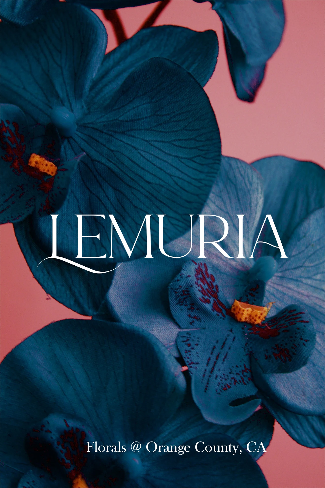
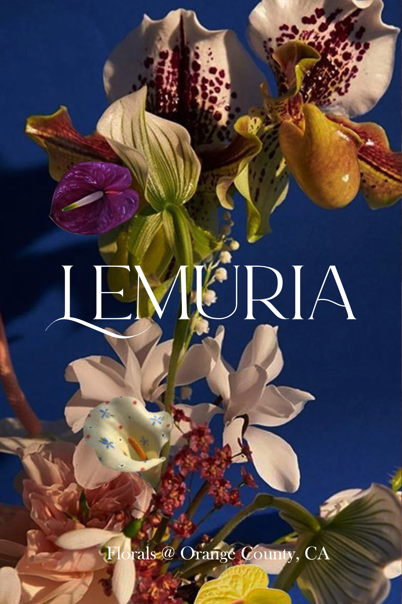
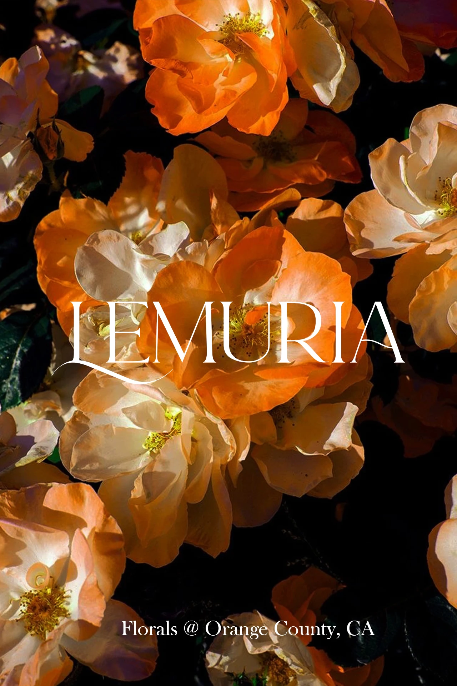
A mark with
a botanical character.
The identity pairs a fine-line floral emblem with a distinctive serif wordmark. The horizontal signature and stacked compositions give the same brand a presence on compact labels, portrait cards, and long ribbons.
Original logo and card designs. Production annotations have been cropped out; the artwork and typography are preserved.
A card that stays
with the flowers.
The folded card brings the identity, flower-care instructions, and social channels into one small format. Here, the print layout is separated into four upright panels so each part of the design can be read clearly.
The source print layout has been reoriented for presentation. Original text and QR-code artwork are retained.
Small formats.
A consistent signature.
Black and white sticker variants carry the horizontal identity onto packaging. A larger bordered label combines the wordmark, botanical emblem, and social handle in a more informational format.
The identity,
in a continuous line.
A repeated logo turns the ribbon into a continuous brand signature. Positive and reversed treatments keep the design usable against both light and dark materials.
One signature.
Different personalities.
The business cards pair the same white wordmark with changing floral imagery. Blue orchids, dusky petals, sculptural blooms, and warm orange flowers give each card its own atmosphere while keeping the brand immediately recognizable.


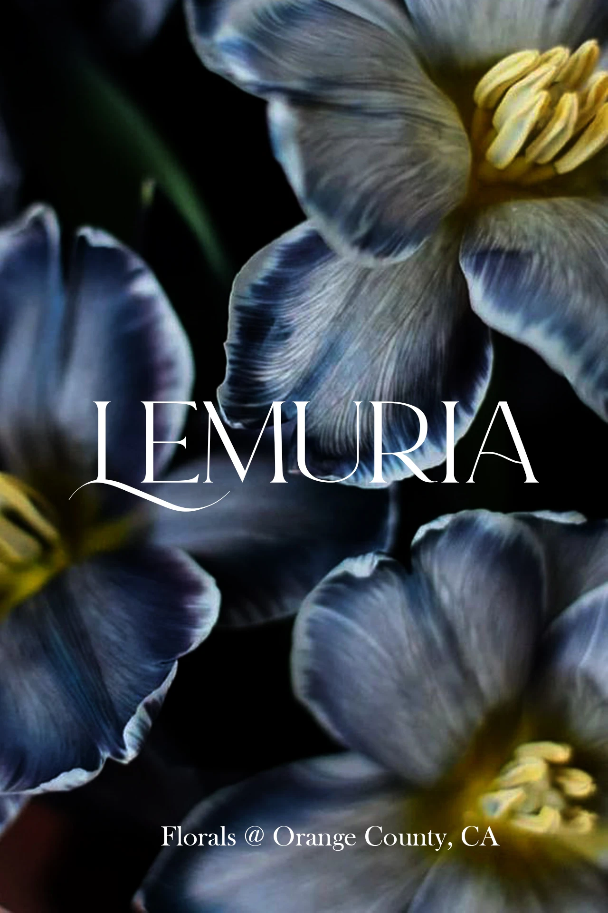


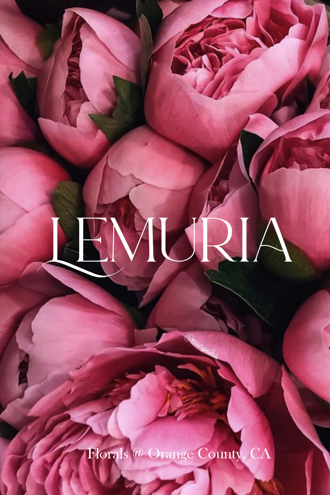


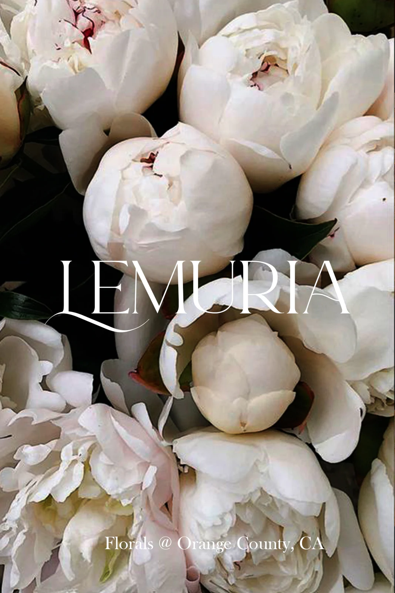
Selected original business-card artwork, 2023. Shown as flat designs.
A signature
around the flowers.
On finished bouquets, the wordmark moves from the card onto a dark ribbon. Its restrained white lettering stays legible against varied flower colors, connecting the printed identity to the object a customer receives.


Original Lemuria bouquet photographs showing the identity in use.
Flowers, in good company.
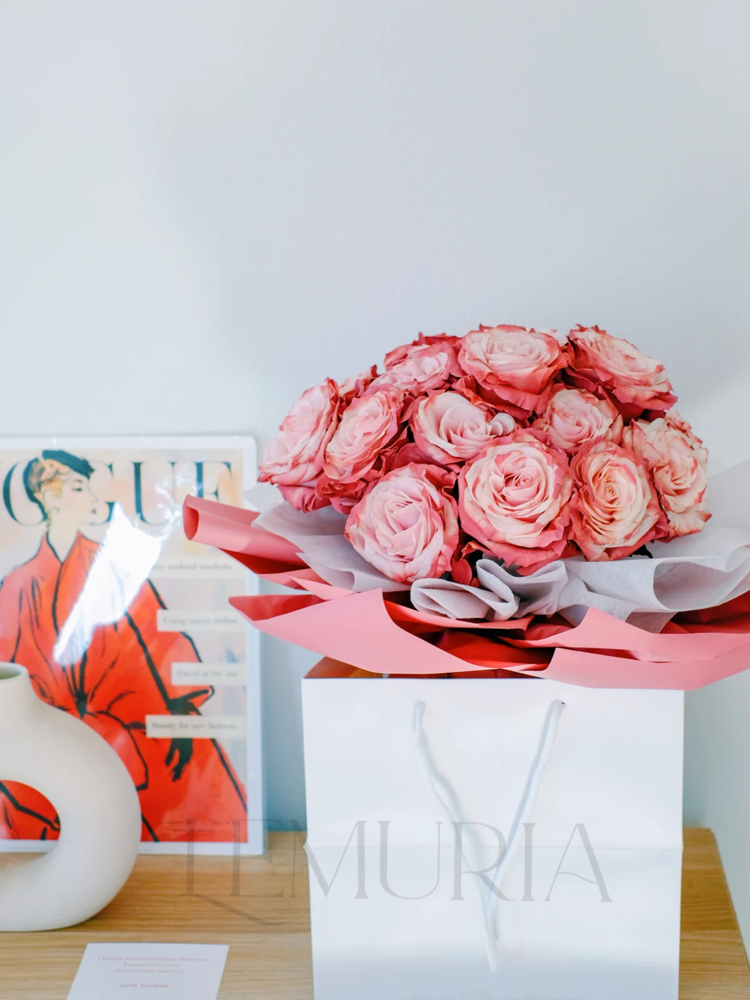
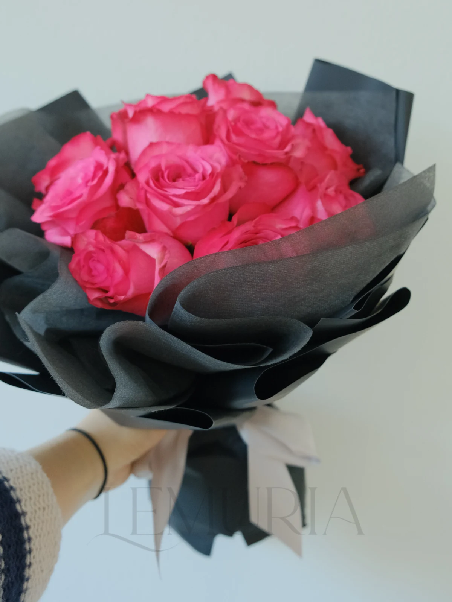
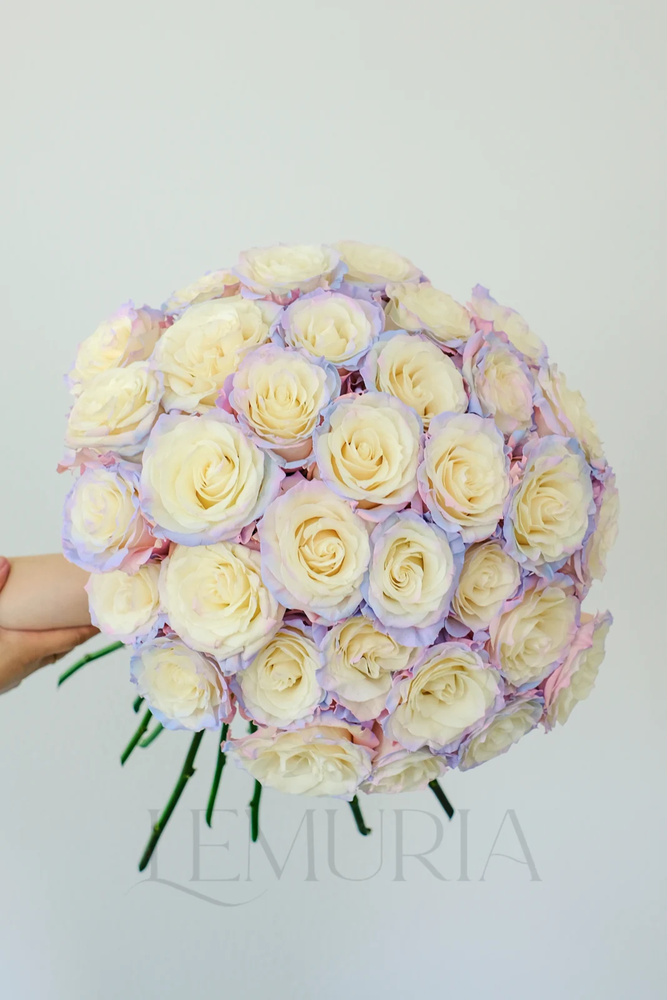
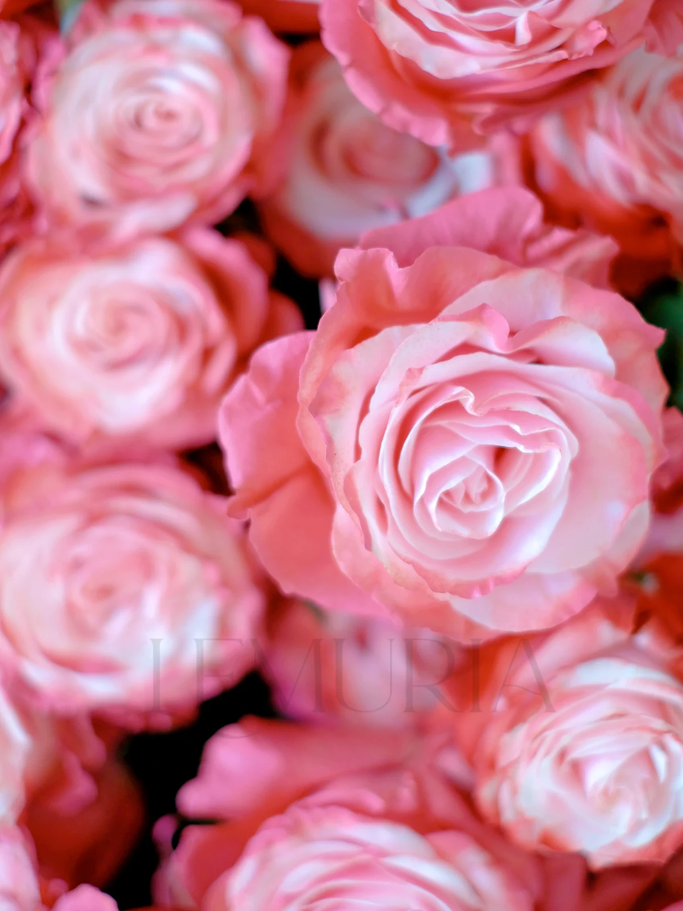
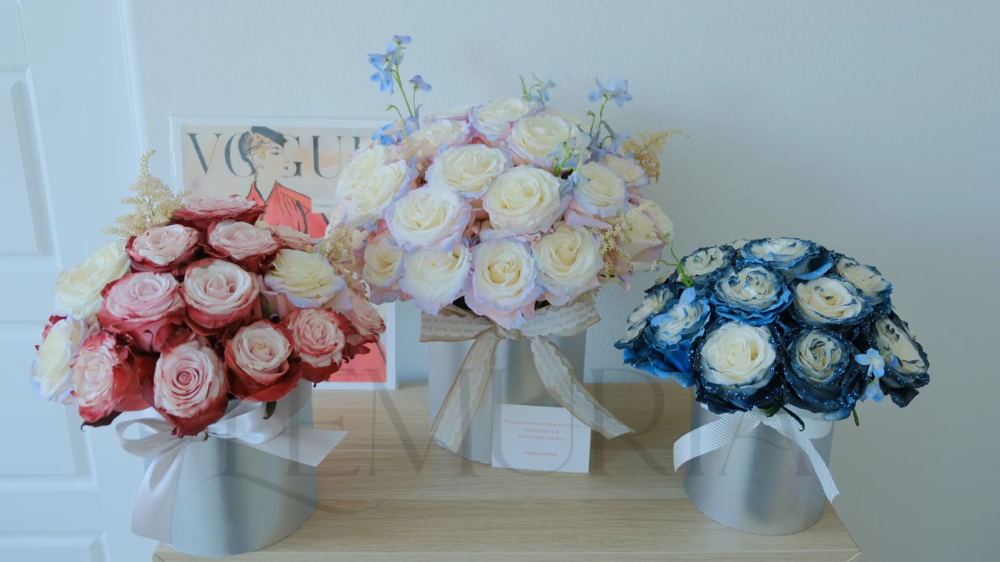
Selected original bouquet photographs · Lemuria Florals, 2023–2024.
Lemuria brought visual design into the everyday details of a small business: the first impression of a card, the consistency of a name, and the finishing touch on a bouquet.